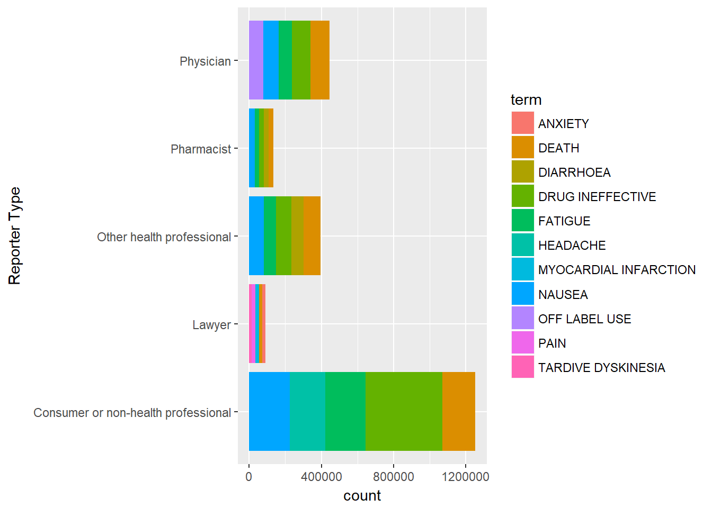
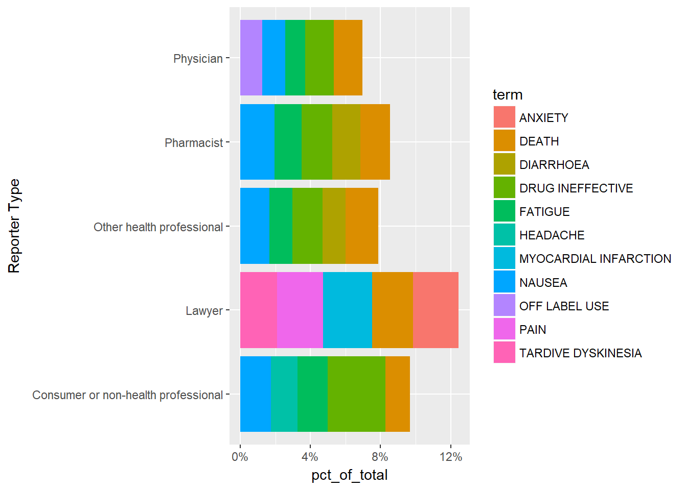
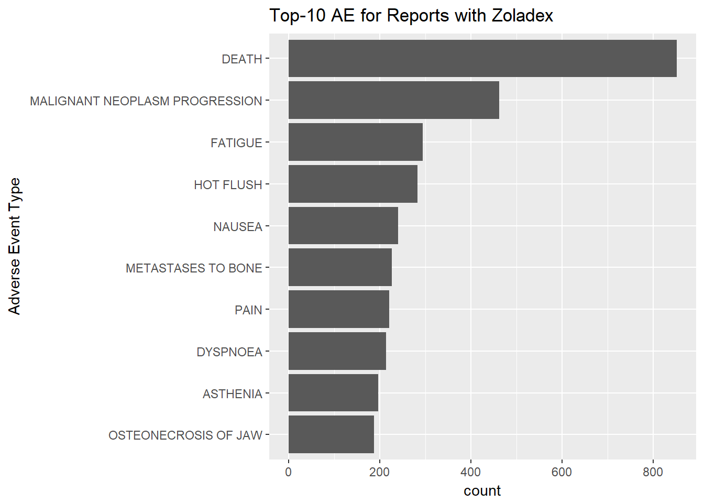
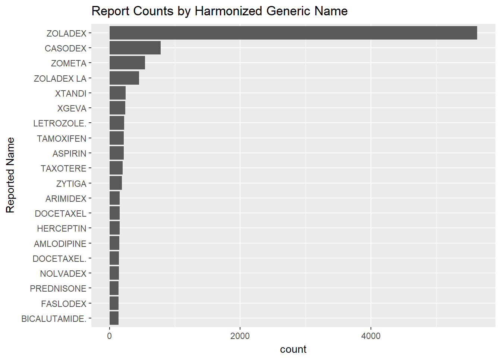

Feasability Testing
library(dplyr)
library(tidyr)
library(httr)
library(jsonlite)
library(ggplot2)
source("./R/functions.R")Multi-Count Query
Attmepting to get categorical subtotals for a set list of categories e.g.,
For this test I will use patient.reaction.reactionmeddrapt.exact counts within primarysource.qualification
# get top 1000 patient.reaction.reactionmeddrapt.exact for each
topReacts = lapply(1:5, function(x){
tempDF = getResults(list(search = paste0("primarysource.qualification:", x), count="patient.reaction.reactionmeddrapt.exact", limit=1000))
tempDF$primarysource.qualification = x
return(tempDF)
})
topReacts = bind_rows(topReacts) %>% left_join(loadCategoryMap("primarysource.qualification") %>% rename(primarysource.qualification = term))## Joining, by = "primarysource.qualification"str(topReacts)## 'data.frame': 5000 obs. of 4 variables:
## $ term : chr "DEATH" "DRUG INEFFECTIVE" "NAUSEA" "OFF LABEL USE" ...
## $ count : int 105369 103906 84756 79590 72130 70661 67485 62301 60888 59413 ...
## $ primarysource.qualification: num 1 1 1 1 1 1 1 1 1 1 ...
## $ term_value : chr " Physician" " Physician" " Physician" " Physician" ...Top-5 Reactions Within Each Reporting Type
plotData = topReacts %>% group_by(term_value) %>% filter(order(-count) <= 5)
ggplot(plotData, aes(as.character(term_value), count, fill = term)) +
geom_bar(stat = "Identity") +
xlab("Reporter Type") +
coord_flip()
Normalized
plotData = topReacts %>% group_by(term_value) %>% mutate(pct_of_total = count / sum(count)) %>% filter(order(-pct_of_total) <= 5)
ggplot(plotData, aes(as.character(term_value), pct_of_total, fill = term)) +
geom_bar(stat = "Identity") +
xlab("Reporter Type") +
scale_y_continuous(labels = function(x) paste0(x*100, "%")) +
coord_flip()
Download Records Beyond Limit Using Skip
Find a query with a resonable number of records to download
qList = list(
search = 'patient.drug.medicinalproduct:"Zoladex"+AND+serious:1+AND+primarysource.qualification:5',
limit=100)
q = createQuery(qList)
initialQuery = getResults(q, excludeMeta = FALSE)
total_results = initialQuery$meta$results$total
print(total_results)## [1] 1577Calculate number of iterations necessary and then iteratively download all records
#Get all records if more than 100 total (TODO: should check if mutliple connections are possible and run in parallel or use source code to change limits)
if(total_results > nrow(initialQuery$results)){
totalIterations = floor(total_results/100)
fullList = lapply(paste0(q, "&skip=", 100*(0:totalIterations)), getResults, verbose = TRUE) # first 100 is redundant with initial query, should update in future
}##
##
## https://api.fda.gov/drug/event.json?api_key=umOJyfx1udGdQjn1XtT1XGasUjSbgiDIvsJ47jiB&search=patient.drug.medicinalproduct:"Zoladex"+AND+serious:1+AND+primarysource.qualification:5&limit=100&skip=0
## SUCCESS!!!
##
## https://api.fda.gov/drug/event.json?api_key=umOJyfx1udGdQjn1XtT1XGasUjSbgiDIvsJ47jiB&search=patient.drug.medicinalproduct:"Zoladex"+AND+serious:1+AND+primarysource.qualification:5&limit=100&skip=100
## SUCCESS!!!
##
## https://api.fda.gov/drug/event.json?api_key=umOJyfx1udGdQjn1XtT1XGasUjSbgiDIvsJ47jiB&search=patient.drug.medicinalproduct:"Zoladex"+AND+serious:1+AND+primarysource.qualification:5&limit=100&skip=200
## SUCCESS!!!
##
## https://api.fda.gov/drug/event.json?api_key=umOJyfx1udGdQjn1XtT1XGasUjSbgiDIvsJ47jiB&search=patient.drug.medicinalproduct:"Zoladex"+AND+serious:1+AND+primarysource.qualification:5&limit=100&skip=300
## SUCCESS!!!
##
## https://api.fda.gov/drug/event.json?api_key=umOJyfx1udGdQjn1XtT1XGasUjSbgiDIvsJ47jiB&search=patient.drug.medicinalproduct:"Zoladex"+AND+serious:1+AND+primarysource.qualification:5&limit=100&skip=400
## SUCCESS!!!
##
## https://api.fda.gov/drug/event.json?api_key=umOJyfx1udGdQjn1XtT1XGasUjSbgiDIvsJ47jiB&search=patient.drug.medicinalproduct:"Zoladex"+AND+serious:1+AND+primarysource.qualification:5&limit=100&skip=500
## SUCCESS!!!
##
## https://api.fda.gov/drug/event.json?api_key=umOJyfx1udGdQjn1XtT1XGasUjSbgiDIvsJ47jiB&search=patient.drug.medicinalproduct:"Zoladex"+AND+serious:1+AND+primarysource.qualification:5&limit=100&skip=600
## SUCCESS!!!
##
## https://api.fda.gov/drug/event.json?api_key=umOJyfx1udGdQjn1XtT1XGasUjSbgiDIvsJ47jiB&search=patient.drug.medicinalproduct:"Zoladex"+AND+serious:1+AND+primarysource.qualification:5&limit=100&skip=700
## SUCCESS!!!
##
## https://api.fda.gov/drug/event.json?api_key=umOJyfx1udGdQjn1XtT1XGasUjSbgiDIvsJ47jiB&search=patient.drug.medicinalproduct:"Zoladex"+AND+serious:1+AND+primarysource.qualification:5&limit=100&skip=800
## SUCCESS!!!
##
## https://api.fda.gov/drug/event.json?api_key=umOJyfx1udGdQjn1XtT1XGasUjSbgiDIvsJ47jiB&search=patient.drug.medicinalproduct:"Zoladex"+AND+serious:1+AND+primarysource.qualification:5&limit=100&skip=900
## SUCCESS!!!
##
## https://api.fda.gov/drug/event.json?api_key=umOJyfx1udGdQjn1XtT1XGasUjSbgiDIvsJ47jiB&search=patient.drug.medicinalproduct:"Zoladex"+AND+serious:1+AND+primarysource.qualification:5&limit=100&skip=1000
## SUCCESS!!!
##
## https://api.fda.gov/drug/event.json?api_key=umOJyfx1udGdQjn1XtT1XGasUjSbgiDIvsJ47jiB&search=patient.drug.medicinalproduct:"Zoladex"+AND+serious:1+AND+primarysource.qualification:5&limit=100&skip=1100
## SUCCESS!!!
##
## https://api.fda.gov/drug/event.json?api_key=umOJyfx1udGdQjn1XtT1XGasUjSbgiDIvsJ47jiB&search=patient.drug.medicinalproduct:"Zoladex"+AND+serious:1+AND+primarysource.qualification:5&limit=100&skip=1200
## SUCCESS!!!
##
## https://api.fda.gov/drug/event.json?api_key=umOJyfx1udGdQjn1XtT1XGasUjSbgiDIvsJ47jiB&search=patient.drug.medicinalproduct:"Zoladex"+AND+serious:1+AND+primarysource.qualification:5&limit=100&skip=1300
## SUCCESS!!!
##
## https://api.fda.gov/drug/event.json?api_key=umOJyfx1udGdQjn1XtT1XGasUjSbgiDIvsJ47jiB&search=patient.drug.medicinalproduct:"Zoladex"+AND+serious:1+AND+primarysource.qualification:5&limit=100&skip=1400
## SUCCESS!!!
##
## https://api.fda.gov/drug/event.json?api_key=umOJyfx1udGdQjn1XtT1XGasUjSbgiDIvsJ47jiB&search=patient.drug.medicinalproduct:"Zoladex"+AND+serious:1+AND+primarysource.qualification:5&limit=100&skip=1500
## SUCCESS!!!# Combine into single data frame
fullList = rbind_pages(fullList)# DF Rows should match metadata total
nrow(fullList) == total_results## [1] TRUEhead(fullList, 1)## reporttype safetyreportversion receivedateformat
## 1 1 1 102
## primarysource.qualification primarysource.reportercountry
## 1 5 CA
## transmissiondateformat fulfillexpeditecriteria safetyreportid
## 1 102 1 10009374
## patient.reaction
## 1 6, 6, 17.0, 17.0, Breast cancer, Malignant neoplasm progression
## patient.patientsex
## 1 2
## patient.drug
## 1 PRODUCT USED FOR UNKNOWN INDICATION, PRODUCT USED FOR UNKNOWN INDICATION, PRODUCT USED FOR UNKNOWN INDICATION, PRODUCT USED FOR UNKNOWN INDICATION, PRODUCT USED FOR UNKNOWN INDICATION, PRODUCT USED FOR UNKNOWN INDICATION, PRODUCT USED FOR UNKNOWN INDICATION, UNCONFIRMED, UNCONFIRMED, UNCONFIRMED, UNCONFIRMED, NA, NA, UNCONFIRMED, 048, 065, 065, 065, 065, 065, 065, 1, 1, 1, 1, 1, 1, 1, Unk, Unk, Unk, Unk, INJECTION, TABLET, NA, UNK TABLET, UNK, DOSAGE FORM - NOT SPECIFIED, SOLUTION INTRAVENOUS, UNK TABLET, UNK, NA, UNK, IMPLANT, 3, 3, 3, 3, 3, 3, 3, LETROZOLE (UNKNOWN), CYCLOPHOSPHAMIDE (UNKNOWN), DOCETAXEL (UNKNOWN), TAMOXIFEN (UNKNOWN), ADRIAMYCIN /00330901/, XELODA, ZOLADEX /00732101/, NA, NA, NA, 076179, NA, NA, NA, 0004-1100, 0004-1101, 0004-1100-20, 0004-1101-50, CAPECITABINE, a1de8bba-3b1d-4c9d-ab8a-32d2c05e67c8, XELODA, Genentech, Inc., 6804DJ8Z9U, 200328, 213293, 200327, 213292, 7f72b4f7-1de0-4c12-8a45-07cfde43e4ea, CAPECITABINE, HUMAN PRESCRIPTION DRUG, ORAL, NDA020896
## patient.patientonsetage patient.patientonsetageunit
## 1 <NA> <NA>
## patient.patientweight patient.narrativeincludeclinical
## 1 <NA> <NA>
## patient.patientagegroup patient.patientdeath.patientdeathdate
## 1 <NA> NA
## patient.patientdeath.patientdeathdateformat serious
## 1 NA 1
## reportduplicate.duplicatesource reportduplicate.duplicatenumb
## 1 ACTAVIS CA-ACTAVIS-2014-04479
## receiptdate receiptdateformat receiver.receivertype
## 1 20140313 102 6
## receiver.receiverorganization companynumb occurcountry
## 1 FDA CA-ACTAVIS-2014-04479 CA
## seriousnessother duplicate sender.senderorganization sender.sendertype
## 1 1 1 FDA-Public Use 2
## receivedate transmissiondate primarysourcecountry seriousnessdeath
## 1 20140313 20141002 CA <NA>
## seriousnesshospitalization seriousnessdisabling
## 1 <NA> <NA>
## seriousnesslifethreatening authoritynumb seriousnesscongenitalanomali
## 1 <NA> <NA> <NA>Expaned Drug Search Using NDC Dataset
# SET TARGET DRUG NAME
target_drug_name = "Zoladex"# prep for query
target_drug_forquery = paste0('"', gsub("\\s+", "+", target_drug_name), '"')
ndc_info = getResults(createQuery(list(search = paste0(paste0(c("brand_name:", "generic_name:"), target_drug_forquery), collapse = "+")),
rootURL = "https://api.fda.gov/drug/ndc.json?"))## No encoding supplied: defaulting to UTF-8.label_info = getResults(createQuery(list(search = paste0(paste0(c("openfda.brand_name:", "openfda.generic_name:"), target_drug_forquery), collapse = "+")),
rootURL = "https://api.fda.gov/drug/label.json?"))## No encoding supplied: defaulting to UTF-8.print(label_info)## NULLprint(ndc_info)## NULL#TODO: need to test how this works it there are multiple generic names not sure what the response will be shaped like
generic_names = unlist(ndc_info$generic_name)
generic_names_forquery = gsub("\\s+", "+",generic_names)qList = list(
search = paste0(c("openfda.brand_name:", "openfda.generic_name:", "patient.drug.medicinalproduct:"),
paste0("(",paste0( c(target_drug_forquery, generic_names_forquery), collapse = "+"), ")"), collapse = "+"),
"count" = "patient.reaction.reactionmeddrapt.exact",
"limit" = 10)
countPlot(getResults(qList), "Adverse Event Type", paste("Top-10 AE for Reports with", paste(c(target_drug_name, generic_names), collapse = " or ")))
qList = list(
search = paste0(c("openfda.brand_name:", "openfda.generic_name:", "patient.drug.medicinalproduct:"),target_drug_forquery , collapse = "+"),
"count" = "patient.reaction.reactionmeddrapt.exact",
"limit" = 10)
countPlot(getResults(qList), "Adverse Event Type", paste("Top-10 Reported AE for Reports with", target_drug_name))
qList$count = "patient.drug.medicinalproduct.exact"
qList$limit = 20
countPlot(getResults(qList), "Reported Name", "Report Counts by Harmonized Generic Name")